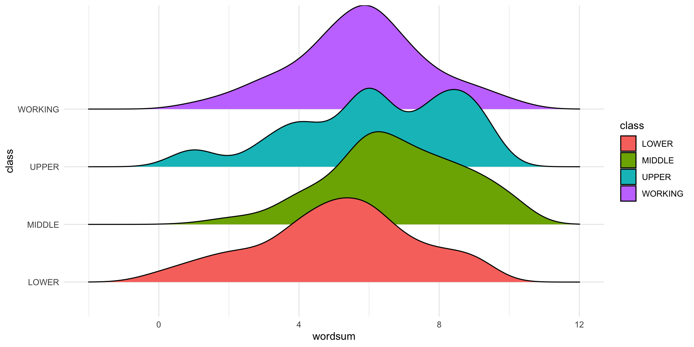

# A tibble: 2 × 6
term df sumsq meansq statistic p.value
<chr> <dbl> <dbl> <dbl> <dbl> <dbl>
1 class 3 237. 78.9 21.7 1.56e-13
2 Residuals 791 2870. 3.63 NA NA IMS1 Ch. 22
Math 219
We could perform 6 separate hypothesis tests (e.g., \(t\)-tests):

| class | n | mean | sd |
|---|---|---|---|
| LOWER | 41 | 5.07 | 2.24 |
| MIDDLE | 331 | 6.76 | 1.89 |
| UPPER | 16 | 6.19 | 2.34 |
| WORKING | 407 | 5.75 | 1.87 |
| LOWER | MIDDLE | UPPER | |
|---|---|---|---|
| MIDDLE | 1.1e-07 | - | - |
| UPPER | 0.048 | 0.240 | - |
| WORKING | 0.031 | 1.6e-12 | 0.367 |
Using the Bonferroni method
library(magrittr) # to get the %$% pipe
gss %$%
pairwise.t.test(wordsum, class, p.adjust.method = "bonferroni")
Pairwise comparisons using t tests with pooled SD
data: wordsum and class
LOWER MIDDLE UPPER
MIDDLE 6.8e-07 - -
UPPER 0.29 1.00 -
WORKING 0.18 9.8e-12 1.00
P value adjustment method: bonferroni p.adjust.method = "holm") Tukey multiple comparisons of means
95% family-wise confidence level
Fit: aov(formula = wordsum ~ class, data = gss)
$class
diff lwr upr p adj
MIDDLE-LOWER 1.6881586 0.8762706 2.5000466 0.0000007
UPPER-LOWER 1.1143293 -0.3311641 2.5598226 0.1945998
WORKING-LOWER 0.6762150 -0.1272750 1.4797050 0.1335047
UPPER-MIDDLE -0.5738293 -1.8290536 0.6813950 0.6416209
WORKING-MIDDLE -1.0119436 -1.3748942 -0.6489929 0.0000000
WORKING-UPPER -0.4381143 -1.6879230 0.8116945 0.8035197pairwise.prop.test function in R